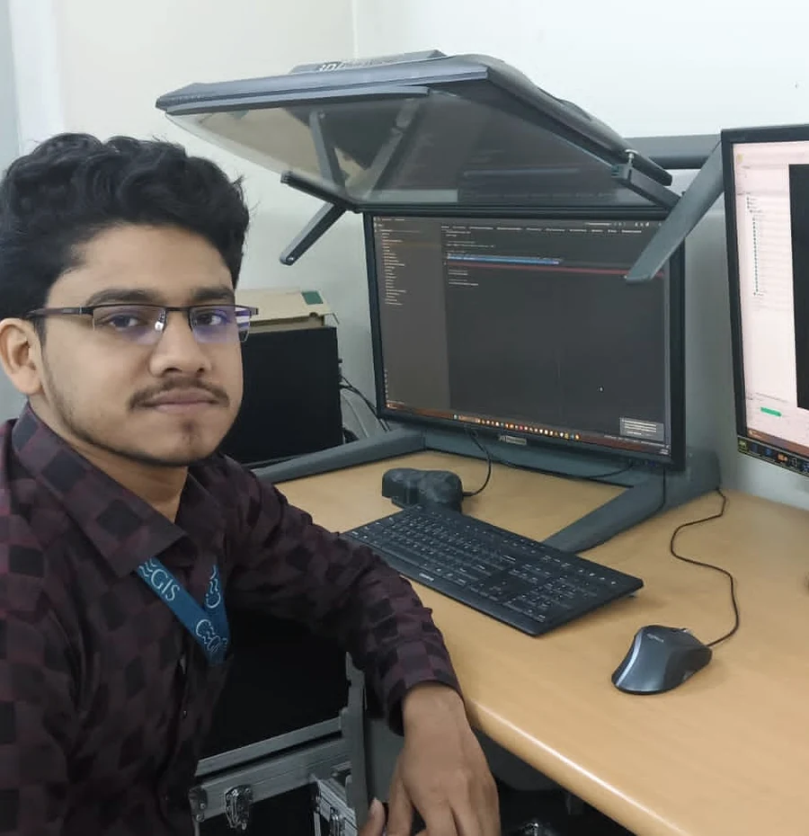
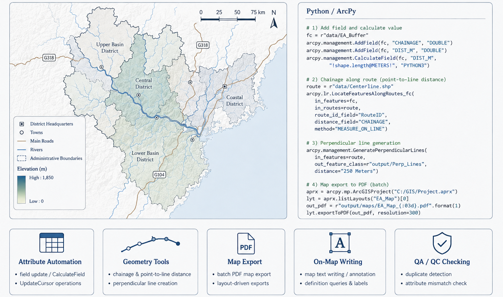
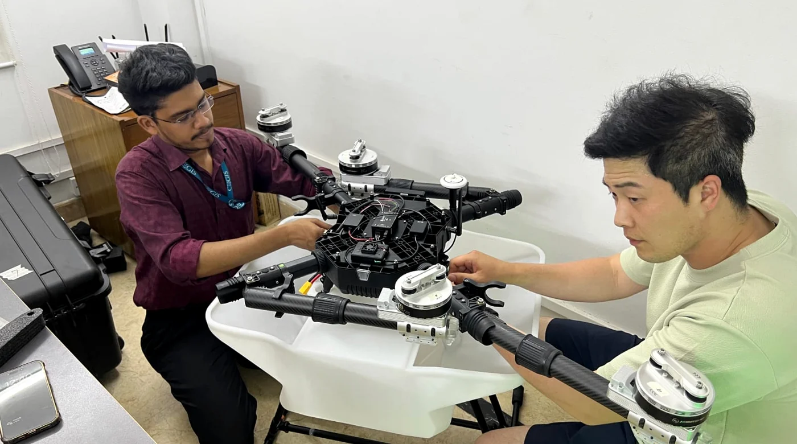
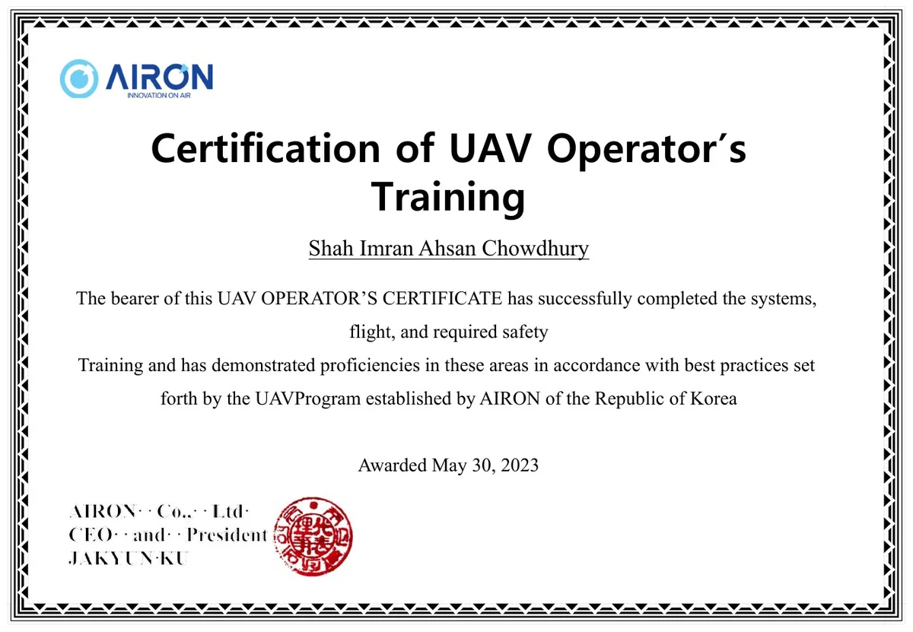
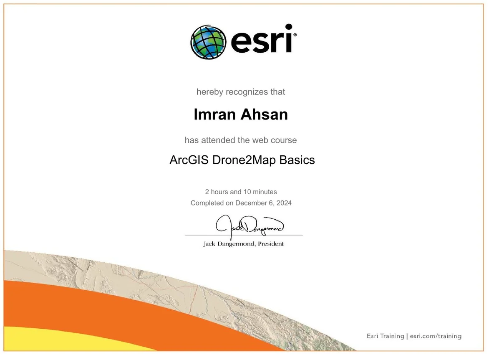
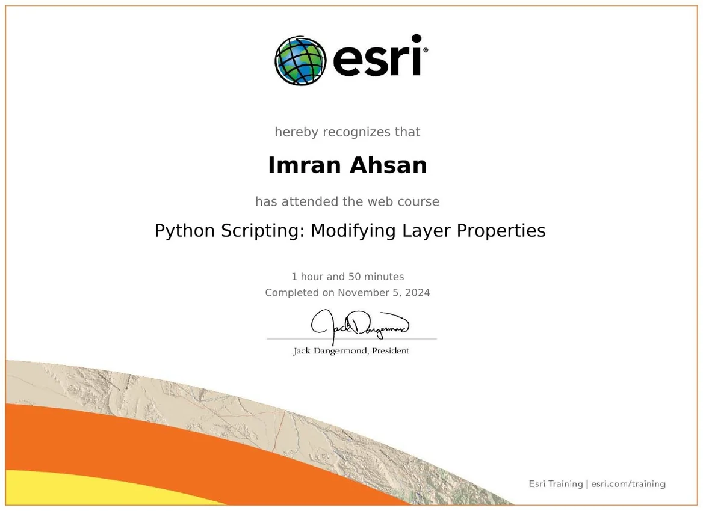
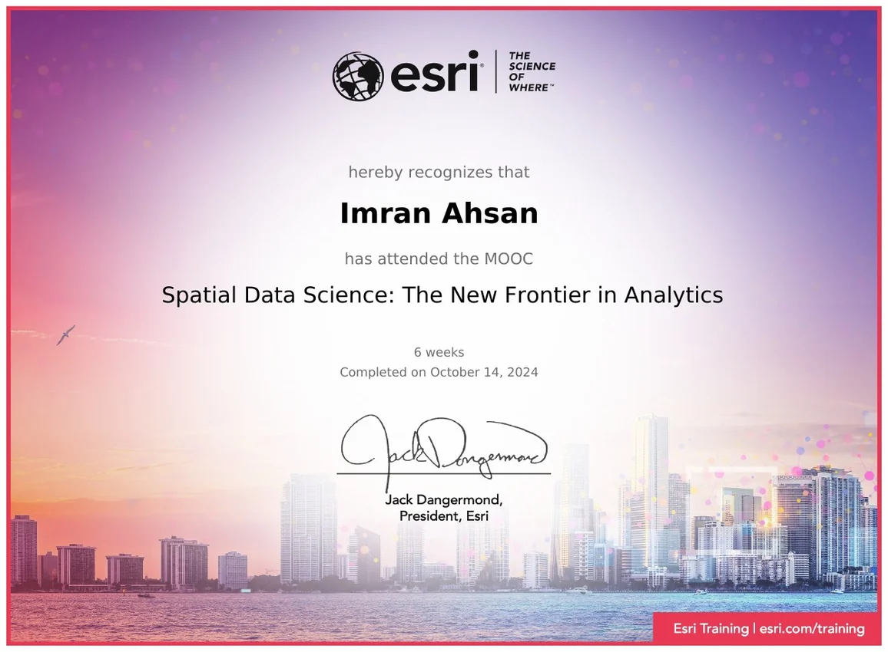

Planning foundation with computing specialization
- MSc in Computer Science & Engineering Jahangirnagar University · CGPA 3.8
- BSc in Urban & Regional Planning RUET · CGPA 3.18

GIS Analyst · GeoAI researcher · Spatial programmer
My background joins Urban & Regional Planning with an MSc in Computer Science and Engineering. At Esri Bangladesh, I connect research methods with operational GIS, automation, remote sensing, and decision-ready spatial data.




Selected verified credentials most relevant to my research and technical profile.



